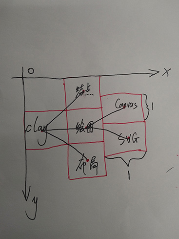
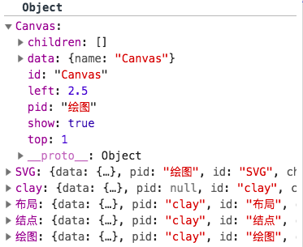

什么是clay?
用一句话描述就是：它是一堆经过设计的，专门用以web端绘图的API集合。
不过，并不完全是简单的API集合，在接口层面进行了分层，主要分为：结点层、计算层、工具层、绘图层和布局层。
每一层具体的调用API可以在文档中查看，这里主要针对比较典型的接口进行举例说明。
数据和结点绑定
通过把数据和结点绑定起来，在修改结点的属性或获取选中条目后想查看具体信息的时候非常方便，比如我们有下面的条形图：

现在有一个需求，你希望根据销售情况修改每个条形的样式，如果你已经完成了数据和结点的绑定，可以这样实现：
$$('path').css('background-color',function(data){
//其中data就是条目对应的绑定数据，这里是销售情况
});
除此之外，设置属性，或者直接根据结点获取绑定的值都非常方便。
关于结点和数据的操作还有很多，比如绑定数据时数据和结点不一样多时，如何补齐等，请在文档中查看。
树布局
布局需要解决的问题是位置的计算，树布局设计的方法是：无论最终需要展示的效果是怎么样的，计算后返回的结点记录的位置都是按照下面的效果计算：
计算的时候，假定每个结点都是1*1的正方形，具体效果需要修改计算，因此可以知道计算后Canvas的元素位置应该是top=1，left=2.5，如下是运行截图：
在截图中可以看见还有一个属性show，其表示该结点是否显示，如果是false表示不显示，也就会导致计算的时候忽略其位置，这是为了在不删除结点的情况下实现类似toggle显示隐藏添加的内部属性。
这里只是说明了树布局的设计思想，具体用法或更多接口请查看文档。